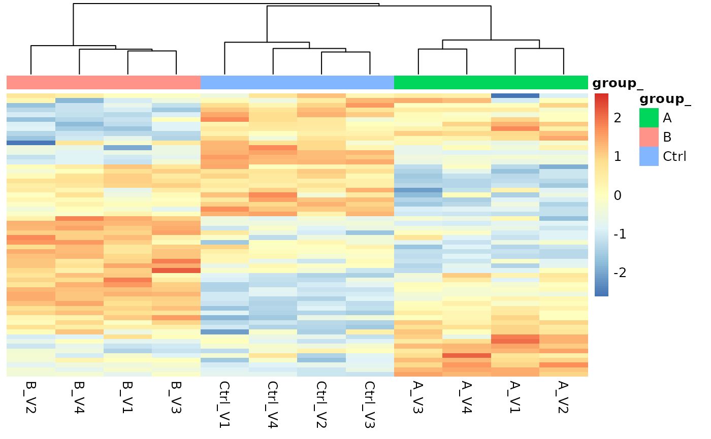
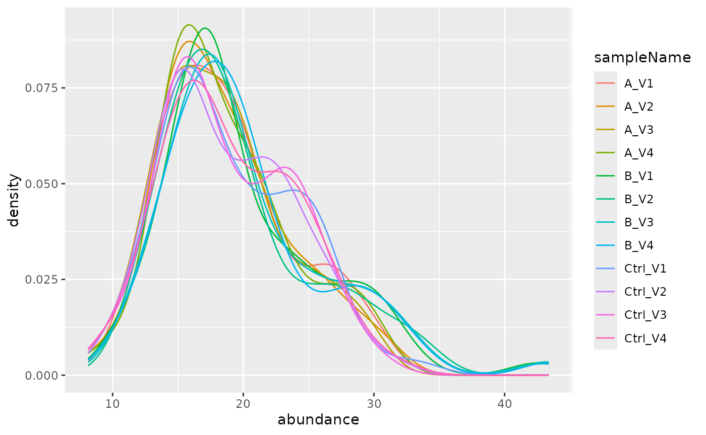
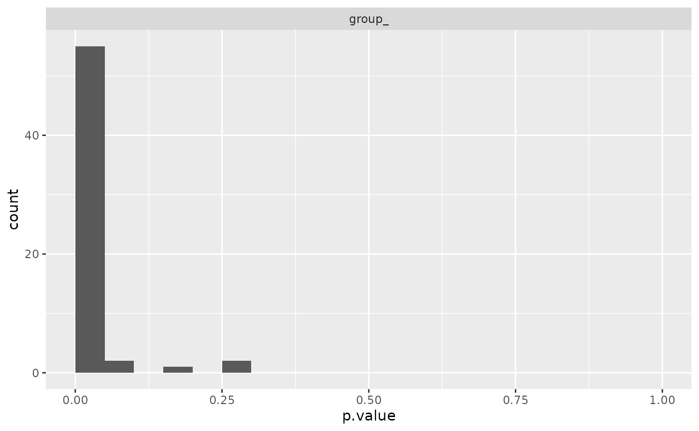
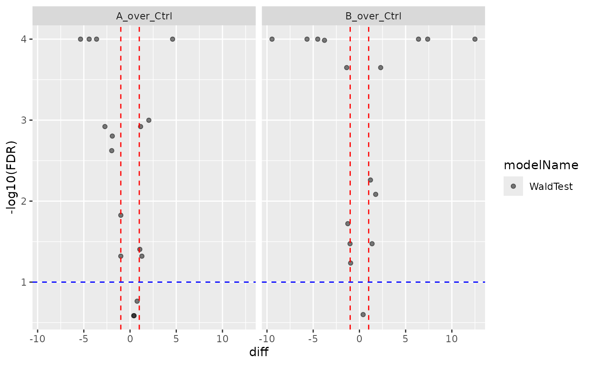

Simulate Peptide level Data
Witold E. Wolski
2026-06-02
Source:vignettes/SimulateData.Rmd
SimulateData.RmdDimulate data
For proteins: - the proteins have a FC either equal 1, 0. or -1, 10% have 1 80% have 0 and 10% have -1.
What we however are measuring are peptide spectrum matches. Let’s assume we observing peptides.
For peptides:
- The transformed protein abundances have a log normal distribution
with
meanlog = log(20), andsd = log(1.2). - The number of peptides per protein follow a geometric distribution, with
- The peptide abundances of a protein have log normal distribution
with
meanlog = log(proteinabundance)andsd = log(1.2) - The log2 intensities of a peptide within a group follow a normal distribution distribution $I_{pep} LogNormal(,) $, where is the peptide abundance and
peptideAbundances <- prolfqua::sim_lfq_data(PEPTIDE = TRUE)Analyse simulated data with prolfqua
library(prolfqua)
config <- AnalysisConfiguration$new()
config$file_name = "sample"
config$factors["group_"] = "group"
config$hierarchy[["protein_Id"]] = "proteinID"
config$hierarchy[["peptide_Id"]] = "peptideID"
config$set_response("abundance")
adata <- setup_analysis(peptideAbundances, config)
lfqdata <- prolfqua::LFQData$new(adata, config)
lfqdata$is_transformed(TRUE)
lfqdata$remove_small_intensities(threshold = 1)
lfqdata$filter_proteins_by_peptide_count()
lfqdata$factors()## # A tibble: 12 × 3
## sample sampleName group_
## <chr> <chr> <chr>
## 1 A_V1 A_V1 A
## 2 A_V2 A_V2 A
## 3 A_V3 A_V3 A
## 4 A_V4 A_V4 A
## 5 B_V1 B_V1 B
## 6 B_V2 B_V2 B
## 7 B_V3 B_V3 B
## 8 B_V4 B_V4 B
## 9 Ctrl_V1 Ctrl_V1 Ctrl
## 10 Ctrl_V2 Ctrl_V2 Ctrl
## 11 Ctrl_V3 Ctrl_V3 Ctrl
## 12 Ctrl_V4 Ctrl_V4 Ctrl
pl <- lfqdata$get_Plotter()
lfqdata$hierarchy_counts()## # A tibble: 1 × 3
## isotopeLabel protein_Id peptide_Id
## <chr> <int> <int>
## 1 light 16 60
lfqdata$relevant_hierarchy_keys()## [1] "protein_Id"
pl$heatmap()
pl$intensity_distribution_density()
Fit peptide model
formula_Condition <- strategy_lm("abundance ~ group_")
lfqdata$set_config_value("hierarchy_depth", 2)
# specify model definition
modelName <- "Model"
contr_spec <- c("B_over_Ctrl" = "group_B - group_Ctrl",
"A_over_Ctrl" = "group_A - group_Ctrl")
lfqdata$subject_id()## [1] "protein_Id" "peptide_Id"
mod <- prolfqua::build_model(
lfqdata,
formula_Condition)
aovtable <- mod$get_anova()
mod$anova_histogram()$plot
xx <- aovtable |> dplyr::filter(FDR < 0.05)
signif <- lfqdata$get_copy()
signif$set_data(signif$data_long() |> dplyr::filter(protein_Id %in% xx$protein_Id))
signif$get_Plotter()$heatmap()
Aggregate data
lfqdata$set_config_value("hierarchy_depth", 1)
protData <- lfqdata$get_Aggregator()$aggregate()
protData$response()## [1] "medpolish"
formula_Condition <- strategy_lm("medpolish ~ group_")
mod <- prolfqua::build_model(
protData,
formula_Condition)
contr <- prolfqua::Contrasts$new(mod, contr_spec)
v1 <- contr$get_Plotter()$volcano()
v1$FDR
ctr <- contr$get_contrasts()Session Info
## R version 4.5.2 (2025-10-31)
## Platform: x86_64-pc-linux-gnu
## Running under: Ubuntu 24.04.4 LTS
##
## Matrix products: default
## BLAS: /usr/lib/x86_64-linux-gnu/openblas-pthread/libblas.so.3
## LAPACK: /usr/lib/x86_64-linux-gnu/openblas-pthread/libopenblasp-r0.3.26.so; LAPACK version 3.12.0
##
## locale:
## [1] LC_CTYPE=C.UTF-8 LC_NUMERIC=C LC_TIME=C.UTF-8
## [4] LC_COLLATE=C.UTF-8 LC_MONETARY=C.UTF-8 LC_MESSAGES=C.UTF-8
## [7] LC_PAPER=C.UTF-8 LC_NAME=C LC_ADDRESS=C
## [10] LC_TELEPHONE=C LC_MEASUREMENT=C.UTF-8 LC_IDENTIFICATION=C
##
## time zone: UTC
## tzcode source: system (glibc)
##
## attached base packages:
## [1] stats graphics grDevices utils datasets methods base
##
## other attached packages:
## [1] prolfqua_1.6.2
##
## loaded via a namespace (and not attached):
## [1] tidyselect_1.2.1 viridisLite_0.4.3 dplyr_1.2.1
## [4] farver_2.1.2 S7_0.2.2 fastmap_1.2.0
## [7] lazyeval_0.2.3 digest_0.6.39 rpart_4.1.24
## [10] lifecycle_1.0.5 survival_3.8-3 statmod_1.5.2
## [13] magrittr_2.0.5 compiler_4.5.2 progress_1.2.3
## [16] rlang_1.2.0 sass_0.4.10 tools_4.5.2
## [19] utf8_1.2.6 yaml_2.3.12 data.table_1.18.4
## [22] knitr_1.51 prettyunits_1.2.0 labeling_0.4.3
## [25] htmlwidgets_1.6.4 plyr_1.8.9 RColorBrewer_1.1-3
## [28] withr_3.0.2 purrr_1.2.2 desc_1.4.3
## [31] nnet_7.3-20 grid_4.5.2 jomo_2.7-6
## [34] mice_3.19.0 ggplot2_4.0.3 scales_1.4.0
## [37] iterators_1.0.14 MASS_7.3-65 cli_3.6.6
## [40] crayon_1.5.3 UpSetR_1.4.1 rmarkdown_2.31
## [43] ragg_1.5.2 reformulas_0.4.4 generics_0.1.4
## [46] otel_0.2.0 httr_1.4.8 minqa_1.2.8
## [49] cachem_1.1.0 operator.tools_1.6.3.1 splines_4.5.2
## [52] vctrs_0.7.3 boot_1.3-32 glmnet_5.0
## [55] Matrix_1.7-4 jsonlite_2.0.0 hms_1.1.4
## [58] mitml_0.4-5 ggrepel_0.9.8 systemfonts_1.3.2
## [61] foreach_1.5.2 limma_3.66.0 plotly_4.12.0
## [64] tidyr_1.3.2 jquerylib_0.1.4 glue_1.8.1
## [67] pkgdown_2.2.0 nloptr_2.2.1 pan_1.9
## [70] codetools_0.2-20 stringi_1.8.7 shape_1.4.6.1
## [73] gtable_0.3.6 lme4_2.0-1 tibble_3.3.1
## [76] pillar_1.11.1 htmltools_0.5.9 R6_2.6.1
## [79] textshaping_1.0.5 Rdpack_2.6.6 formula.tools_1.7.1
## [82] evaluate_1.0.5 lattice_0.22-7 rbibutils_2.4.1
## [85] backports_1.5.1 pheatmap_1.0.13 broom_1.0.13
## [88] bslib_0.11.0 Rcpp_1.1.1-1.1 gridExtra_2.3
## [91] nlme_3.1-168 mgcv_1.9-3 logistf_1.26.1
## [94] xfun_0.58 fs_2.1.0 forcats_1.0.1
## [97] pkgconfig_2.0.3